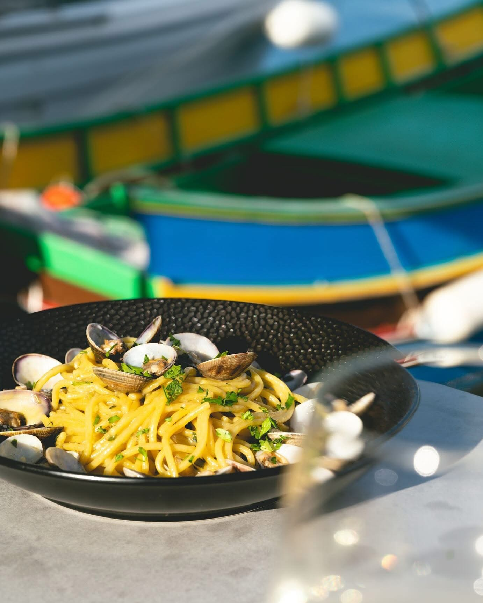
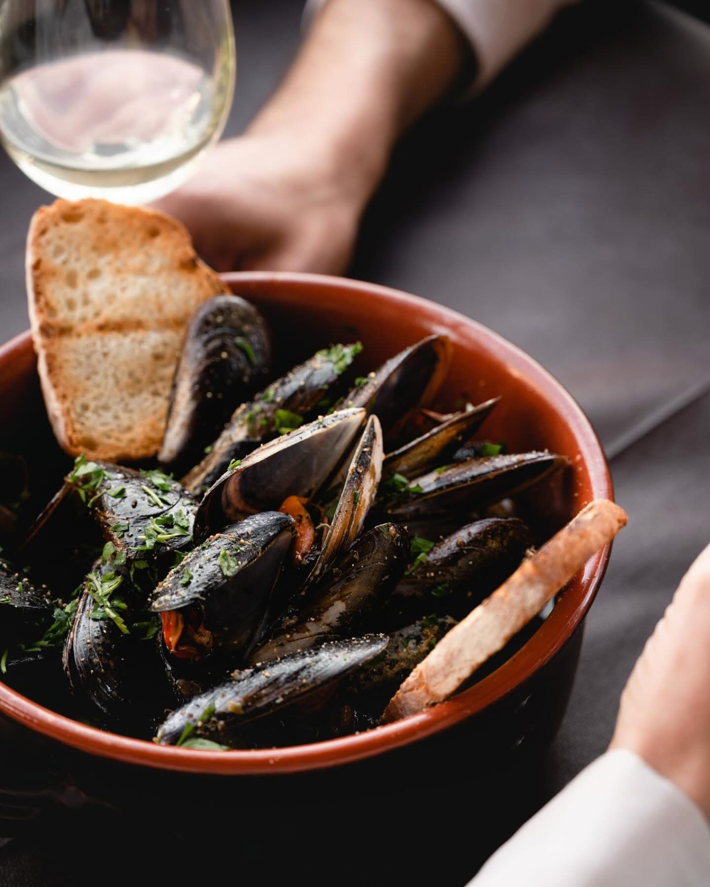
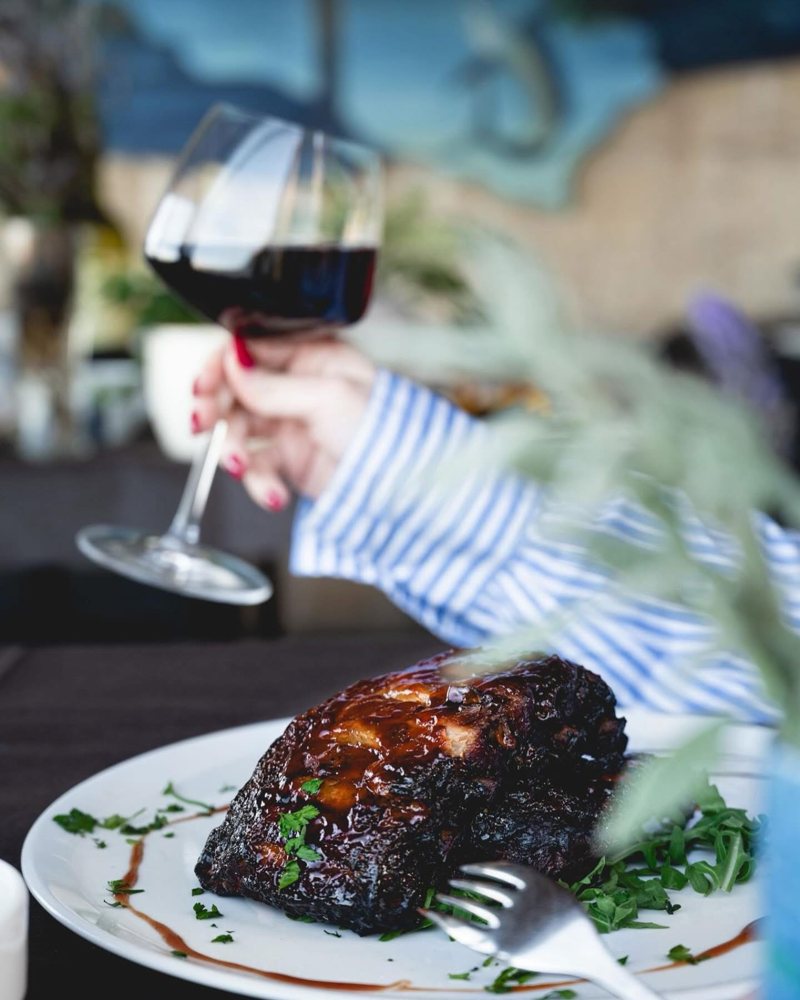
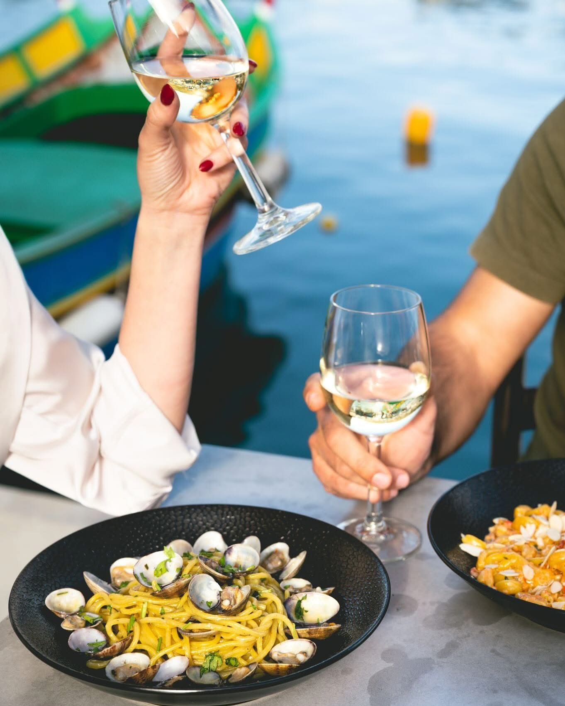
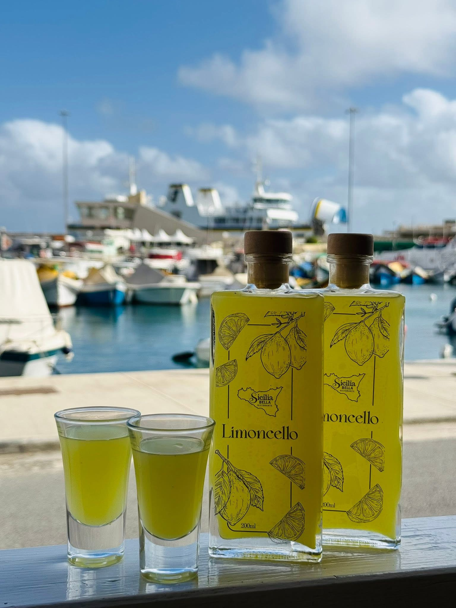

Maria Bifulco
★★★★★
“Everything about this restaurant, atmosphere, food, service, price is absolutely perfect.”

ITALIAN & SICILIAN RESTAURANT · MĠARR HARBOUR, GOZO
Fresh pasta, seafood and Sicilian favourites served at Mġarr Harbour in Gozo.


01 / 03
Sicilian pasta and risotto, from classic sauces to seafood.
Sicilia Bella is an Italian and Sicilian restaurant in Mġarr, Gozo, serving pasta, seafood and local favourites overlooking the harbour.


Find Sicilia Bella at Mġarr Harbour in Gozo. For reservations and current availability, call the restaurant directly.
Triq Manoel de Vilhena
Mġarr Harbour, Gozo